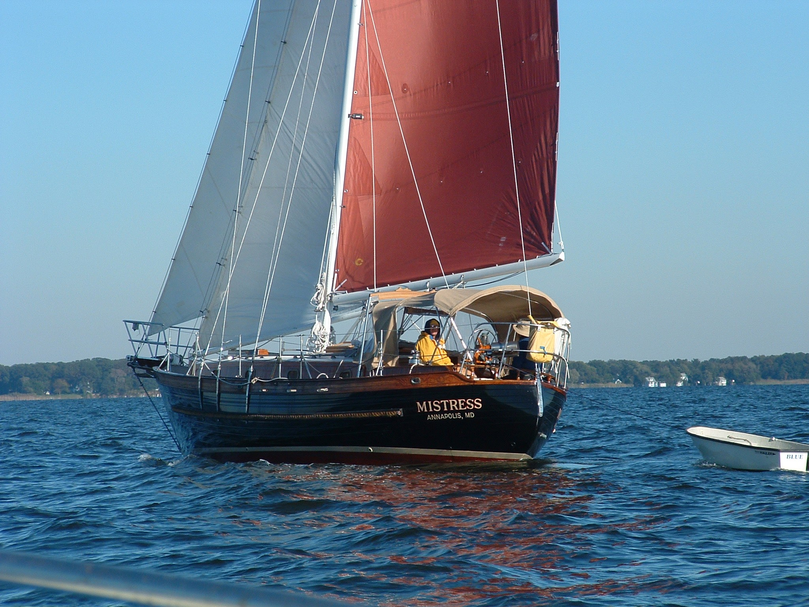
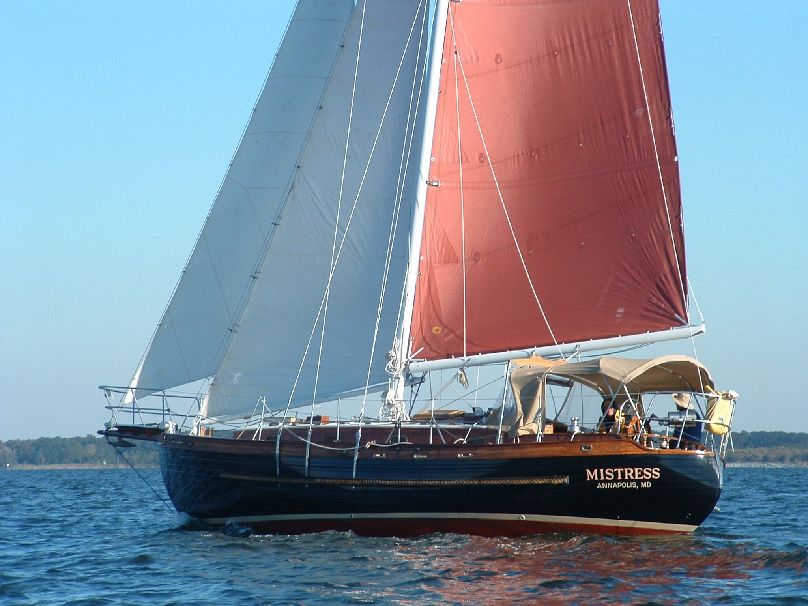
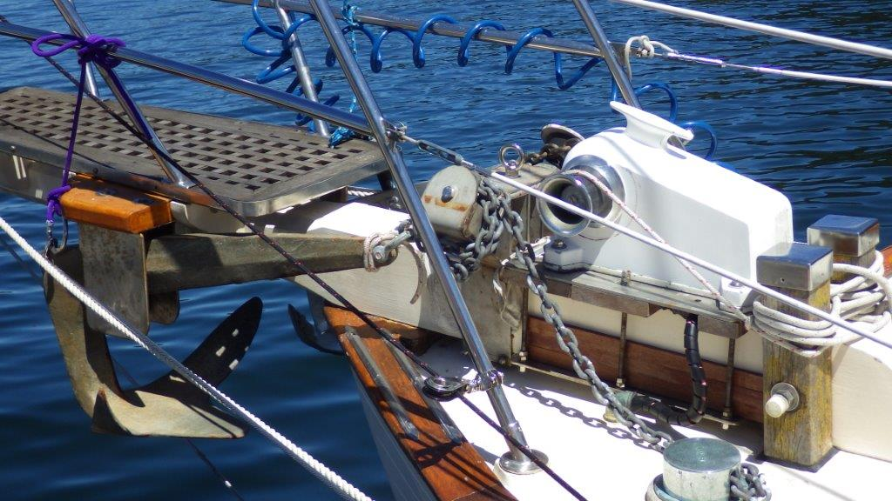

Tayana 37 A classic built for distance
Heavy-displacement long-keel cutter with canoe stern. Designed by Robert Perry, built by Ta Yang in Taiwan from 1976. Approximately 588 hulls produced.
Designed as a more capable response to the Westsail 32, the Tayana 37 pairs traditional double-ended lines with solid hand-laid fiberglass and a practical cutter rig. Originally the CT 37, it became one of the most numerous semi-custom offshore cruisers of its generation.
The standard configuration is a cutter; ketch and pilothouse versions also exist. Many remain in active long-distance service worldwide.
- Designer: Robert H. Perry
- Builder: Ta Yang Yacht Building, Taiwan
- Hull: solid GRP, modified long keel, cutaway forefoot
- Stern: canoe (Baltic-inspired)
- Primary rig: cutter
| LOA / LWL | 36.67 ft / 31.00 ft |
|---|---|
| Beam / Draft | ≈ 11.5 ft / ≈ 5.7 ft |
| Displacement / Ballast | 22,500 lb / ≈ 8,000 lb iron |
| Sail area (cutter) | ≈ 861 ft² |
| Fuel / Water | ≈ 90–100 gal each |
| Engine (original) | Yanmar 33–40 hp |
| SA/D · Ballast% · D/L | ≈ 17 · 35% · 337 |
| Comfort · Capsize · Hull speed | ≈ 41 · 1.63 · 7.46 kn |
Perry cut away the forefoot and used a Constellation-type rudder for better maneuverability while retaining full-keel directional stability. The cutter is weatherly and well suited to short-handed passagemaking.






The Tayana 37s that have been part of the search.